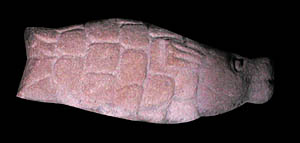

MatsyaThe first incarnation of Vishnu was a little fish called Matsya. Matsya was the colour of gold and had one horn. 
Vishnu was sent to earth as Matsya to protect a sage named Vaivaswata from a flood. Matsya starts out as a small fish, but grows until he is forty million miles long at the coming of the flood. Matsya also tows Vaivaswata's boat by tying a rope to the boat and attaching it to his horn. |